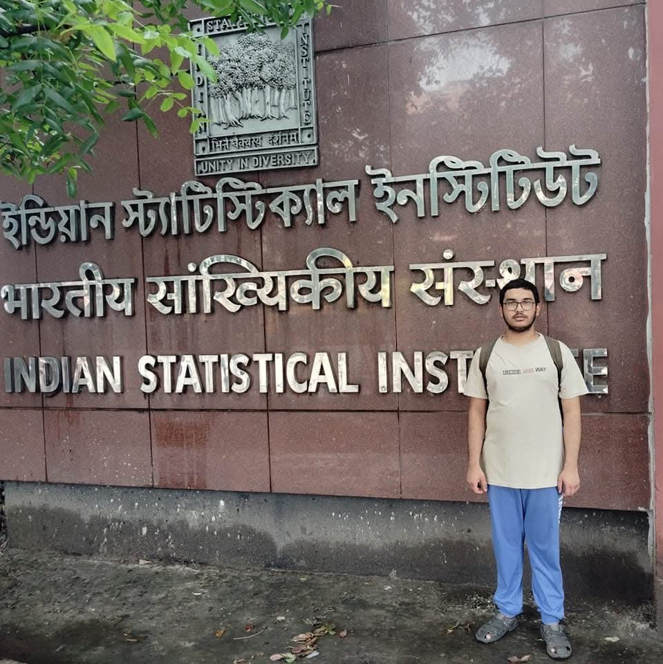
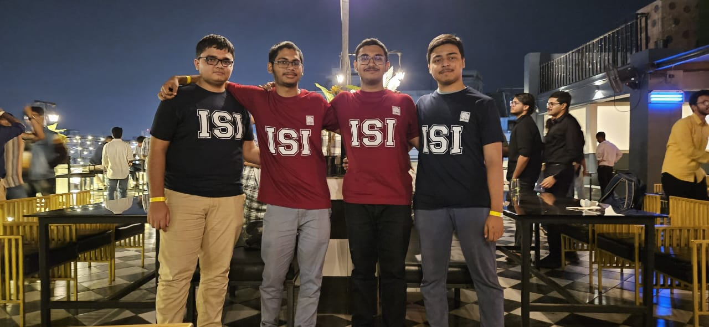
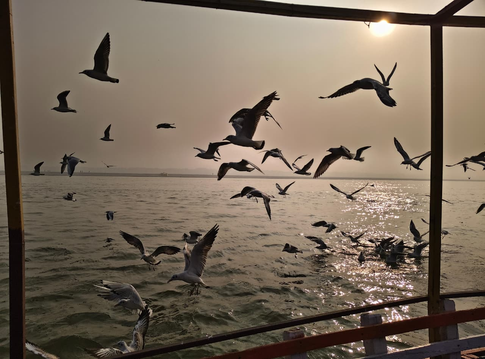
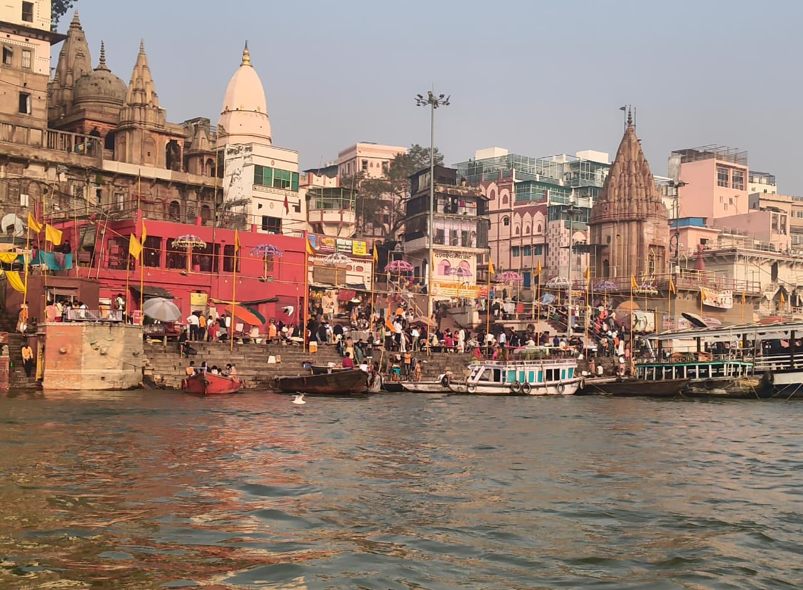
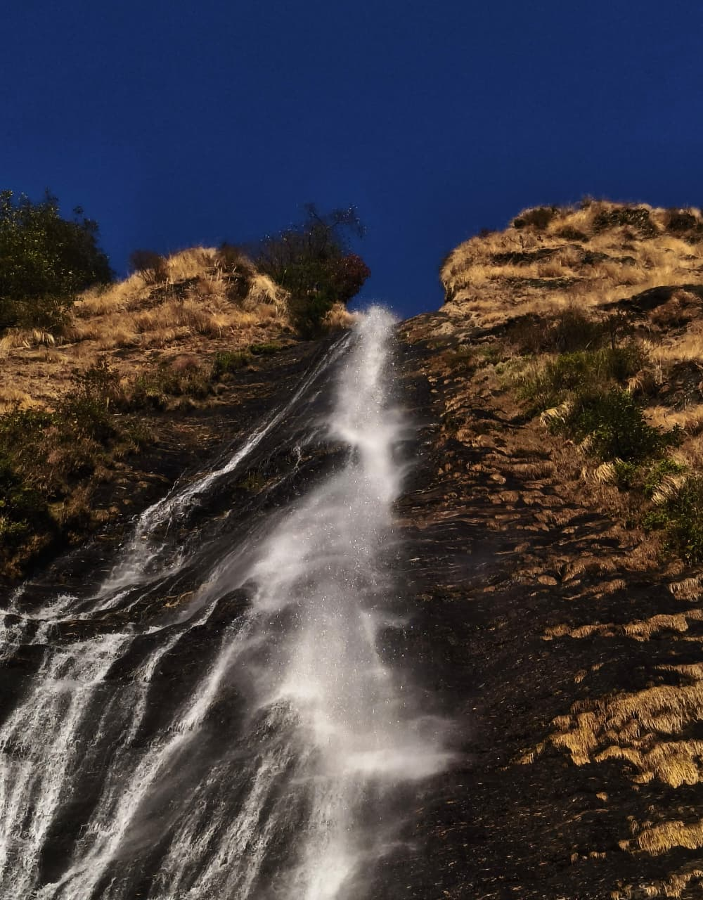
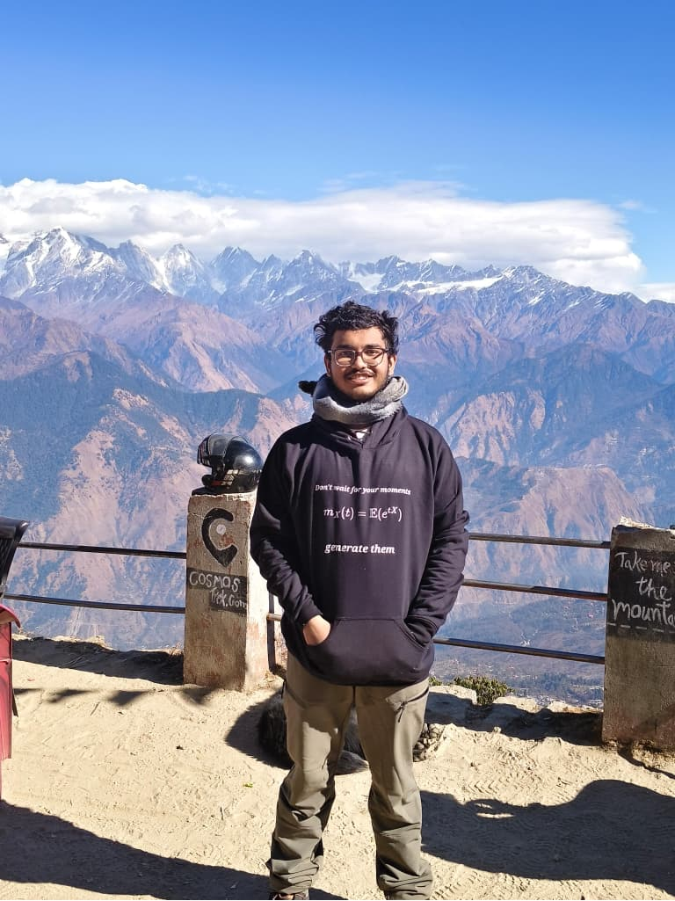
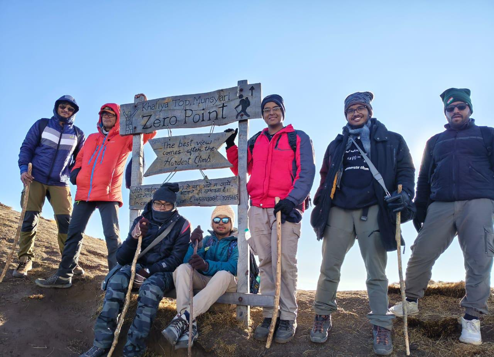
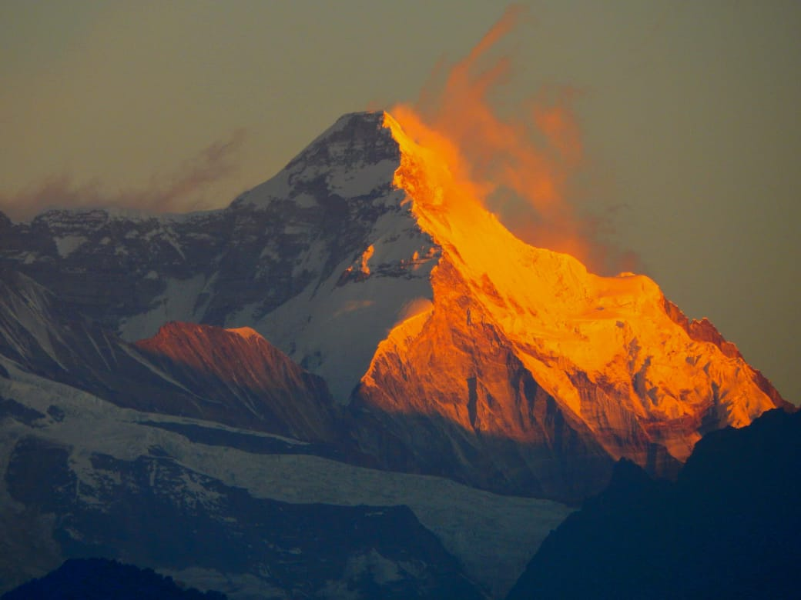

My gallery
Here are some photographs which I like or which represent some important stage of my life.
Infant me with my parents, probably the best picture of three of us till now
My first photograph in front of 203 gate ISI
Me with my best friends Arnab , Shounak and Sayan respectively from my left

A picture of R A FISHER Bhavan along with a rainbow in front of the fountain that I clicked from the ghat beside the temple sometime in the summer acation 2025. It is my favourite place on the campus.
Ganga from Benaras with some seagulls, winter 2025
Dasaswamedh Ghat, Benaras, winter 2025
Birthi Falls, Uttarakhand, Batch Trip 2025
Khalia top hike, batch trip 2025
At khalia top zero point where 5 of our team and Arnab Chakraborty Sir, completed the hike till zero point. Me, Sourodeep da, Archisman, Sahitya, Arnab Sir and Srijeet da from right.
Not clicked by me, not sure who sent me this but the Nandadevi peak looks very beautiful.